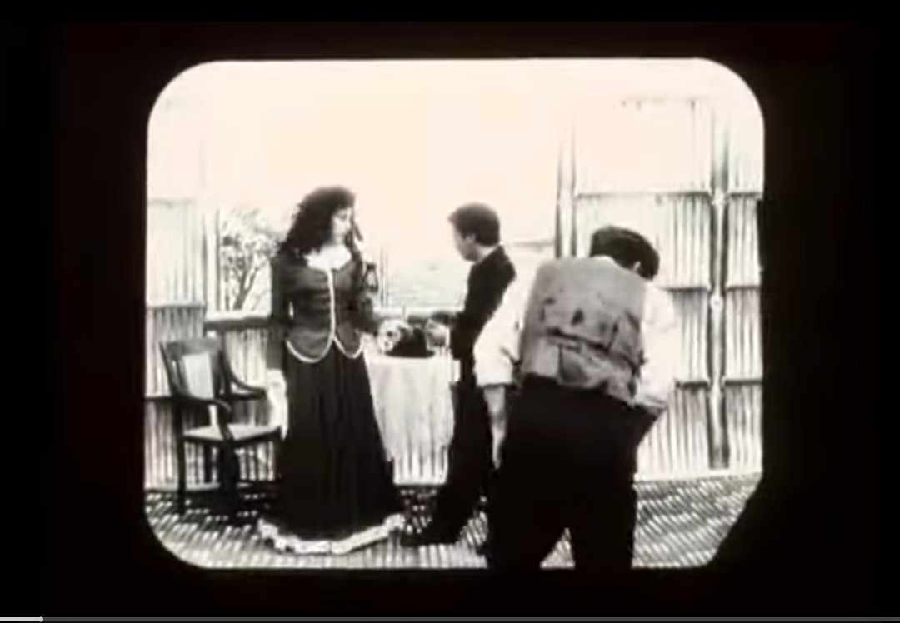
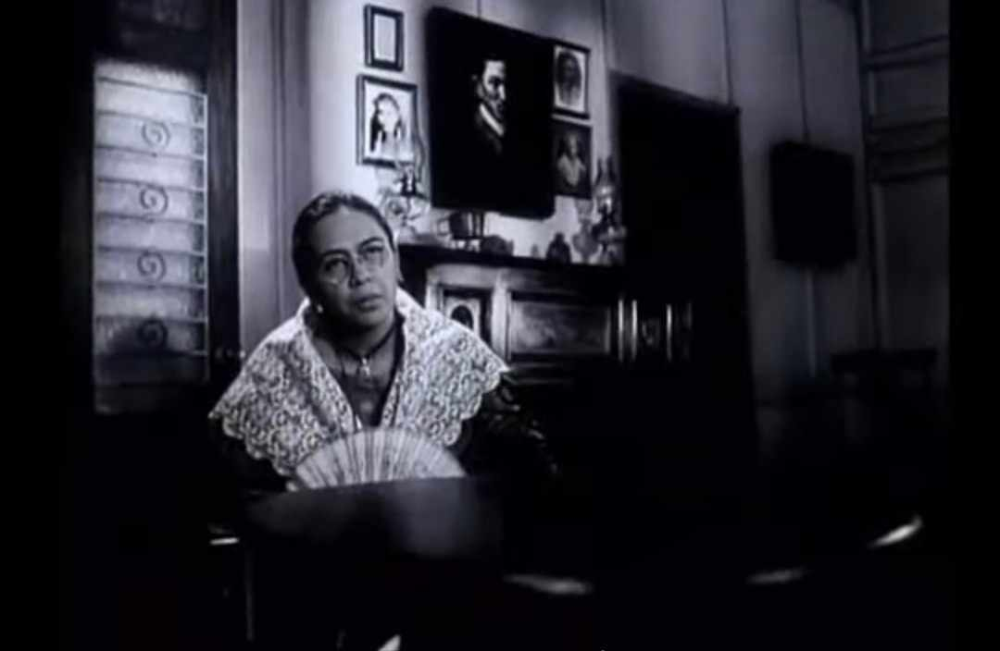
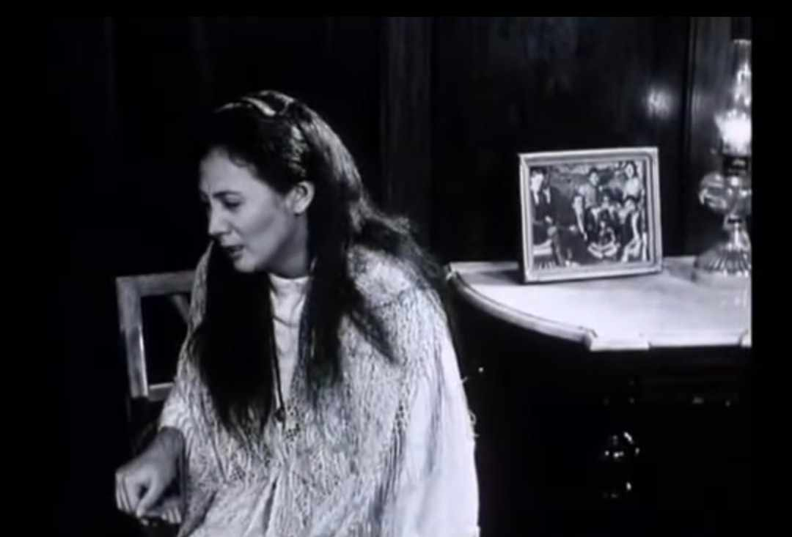
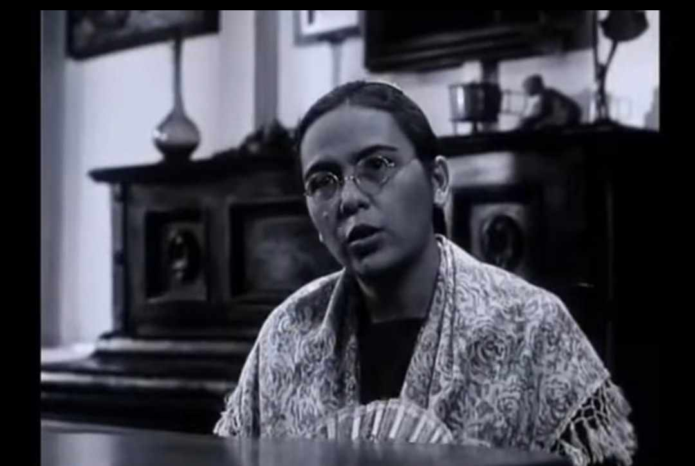
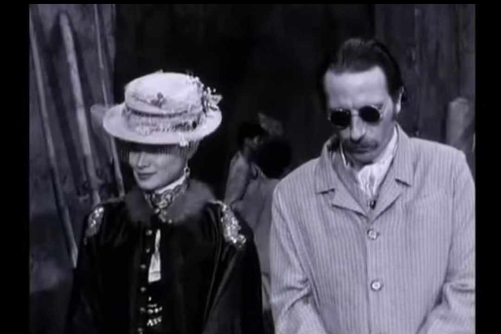
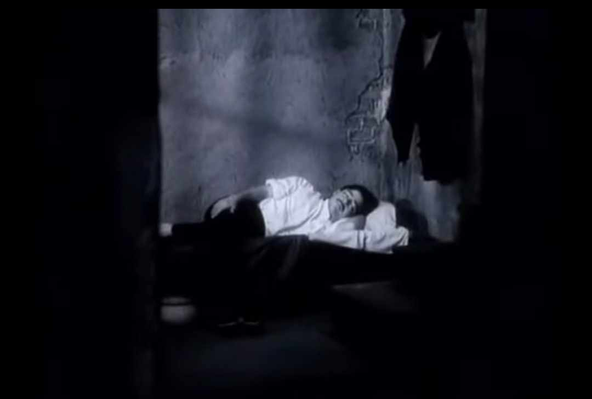
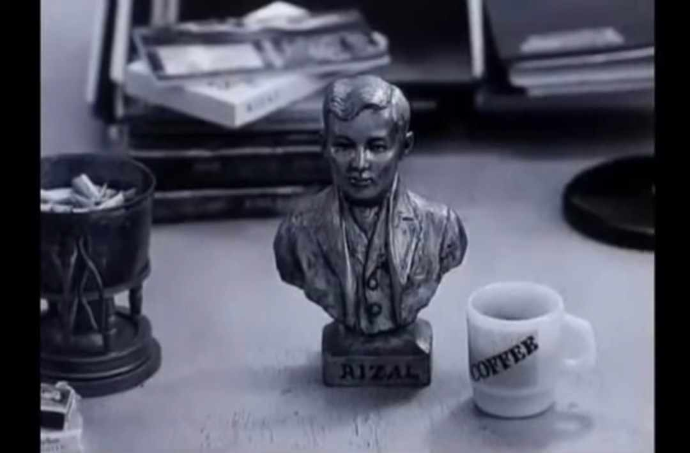
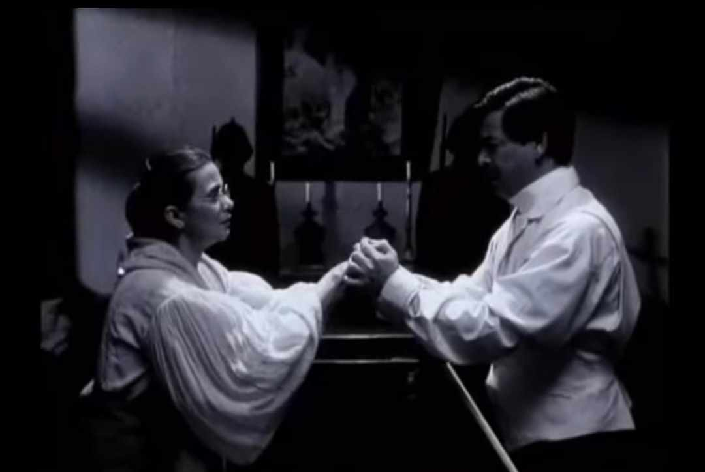
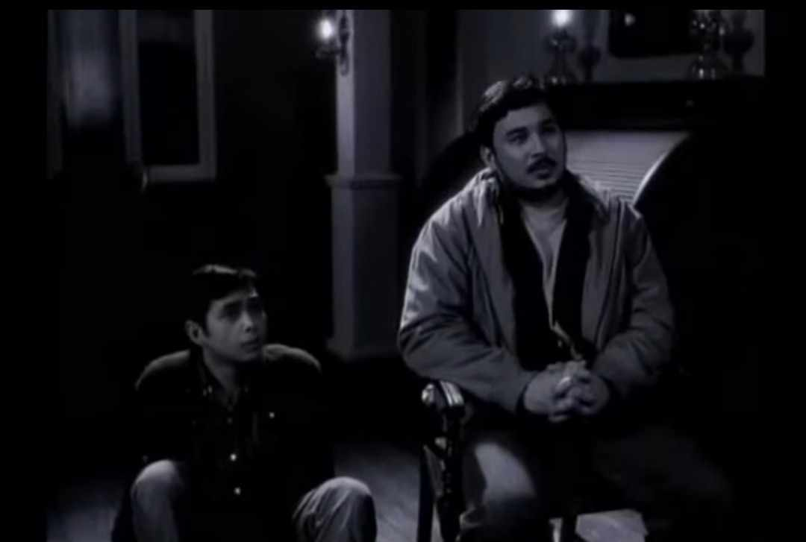
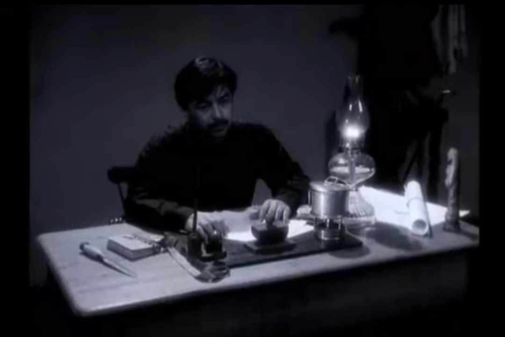

The 19th century was a crucial period in Philippine history, bringing major political, economic, social, and cultural changes. Under Spanish colonial rule, the Philippines was governed by the Governor-General, who represented the Spanish Crown. However, the colonial government was highly corrupt, with excessive taxation and widespread abuses by Spanish officials and friars. Liberal ideas from Europe, particularly from the Enlightenment and the French Revolution, influenced José Rizal and other Filipino intellectuals, shaping their desire for reform and justice.
Economically, Spain’s decision to open Manila to world trade in 1834 led to significant changes. A new middle class, the ilustrados, emerged, including Rizal’s family. While this boosted economic activity through cash crops like sugar, tobacco, and abaca, it also worsened economic inequality. Spanish elites and friars controlled vast lands (haciendas), forcing Filipino farmers into unfair labor systems such as polo y servicios (forced labor). This growing economic disparity fueled resentment among Filipinos.
Education and social structure also played a role in the awakening of Filipino nationalism. The ilustrados studied in Europe and returned with progressive ideas, advocating for reforms. However, the education system remained under the control of Spanish friars, limiting access to knowledge for most Filipinos. The Gomburza execution in 1872 further ignited resistance, as Filipino priests like Father José Burgos fought for equal treatment in the church. Rizal, influenced by these events, strongly supported education and empowerment, including advocating for women’s rights, as seen in his letter to the women of Malolos.
This topic was chosen by this because it provides a clear understanding of the historical events that shaped Rizal’s thoughts and actions. It highlights how various political, economic, and social issues fueled Filipino nationalism and led to the eventual fight for independence. Learning about Rizal in the context of the 19th century helps in appreciating his role not just as a writer but as a key figure in the country’s fight against colonial oppression. His story remains relevant today, reminding Filipinos of the importance of education, critical thinking, and standing up against injustices.
1. The filmmakers discuss their intent to create a film about José Rizal. What challenges do they
anticipate in portraying his life?
 -----------The filmmakers struggle with how to present Jose Rizal’s story. They recognize that Rizal is a complex figure, and many aspects of his life such as his relationships, beliefs, and decisions are surrounded by controversy. They fear that their film might not uncover the complete truth, as history is often shaped by different interpretations ( 04:13 - 5:56 ).
2. A debate arises about the authenticity of Rizal's retraction document. What are the main
arguments presented regarding its validity?
 -----------The film presents conflict views on Rizal’s retraction of his anti-Catholic writings. Some argue that the document was forged by the Spanish friars to weaken Rizal’s influence as a revolutionary hero. and also the lack of a confirmed original document adds to the mystery, making it difficult to determine the truth ( 56:27 - 59:36 ).
3. The character of Josephine Bracken is introduced. How does the film depict her relationship with
Rizal?
 -----------Josephine Bracken is portrayed as a significant yet often overlooked figure in Rizal’s life. The film explores whether their relationship was based on true love or if it was influenced by external factors, There is also uncertainty about whether they were truly married ( 15:22 - 16:37 ).
4. The filmmakers interview a historian about Rizal's alleged retraction. What evidence is provided
to support or refute the claim?
 -----------The historian presents both sides of the argument. Supporters of the retraction claim that Rizal signed the document in the presence of witnesses, but skeptics point out inconsistencies in handwriting and the lack of an original copy ( 58:48 - 59:06 ).
5. The film presents different portrayals of Rizal’s execution. How does each version differ, and what
do these differences suggest?
 -----------The film creatively reimagines Rizal’s execution in multiple ways, showing different possible outcomes. one version depicts him turning to face the firing squad, symbolizing defiance, while another shows him falling with his back turned, as recorded in official history. These variations suggest how historical can be interpreted differently, depending on who is telling the story ( 48:55 - 55:33 ).
6. One of the characters questions whether Rizal was truly a hero. What reasoning do they give to
challenge his heroism?
 ----------- The film questions whether Rizal’s heroism was exaggerated or even manipulated for political purposes. Some characters argue that Rizal was not as revolutionary as other figures like Bonifacio, as he initially opposed violent rebellion. They also question whether his writings truly inspired the revolution or if he was simply made a hero by later generations ( 55:40 ).
7. A scene features a discussion about Rizal’s religious beliefs. How does the film depict his stance
on faith and the Catholic Church?
 -----------The film portrays Rizal as a man who struggled with his faith. While he criticized the abuses of the Catholic Church, he also showed signs of religious belief. The debate over his retraction reflects this internal conflict whether he remained critical of the Church until his death ( 01:02:30 ).
8. The film uses a unique narrative style, including fictionalized conversations with Rizal. How does
this technique affect storytelling?
 -----------The film’s unconventional approach where Rizal responds to the filmmakers creates an engaging and thought provoking narrative. This technique allows the audience to see different perspectives on Rizal’s life and understand how history is constructed. It also adds a layer of mystery, emphasizing that the truth about Rizal may never be fully known ( 01:10:25 ).
9. At one point, the filmmakers express frustration with their research on Rizal. What specific issue
causes this frustration?
 -----------The filmmakers become frustrated because there are too many conflict about Rizal’s life. The lack of definitive proof regarding to key events retraction, his relationship with josephine bracken, and his final thoughts makes it difficult to present a clear and truthful story ( 01:18:15 - ).
10. The film concludes with a reflection on Rizal's legacy. How do the filmmakers interpret his impact
on contemporary Philippine society?
 ----------- The film suggests that Rizal’s legacy is both powerful and complicated. While he is celebrated as a national hero, the uncertainties surrounding his life show how history is shaped by narratives, not just facts. The filmmakers leave the audience with a question, do we truly know rizal? or do we only know the version of him that history has created? The ending challenges viewers to think critically about historical figures and the way their stories are told ( 01:25:50 - ).